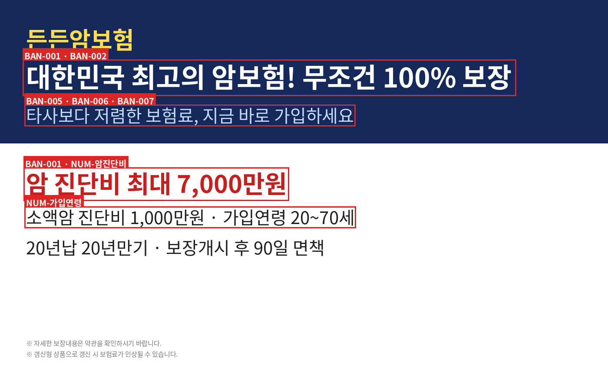
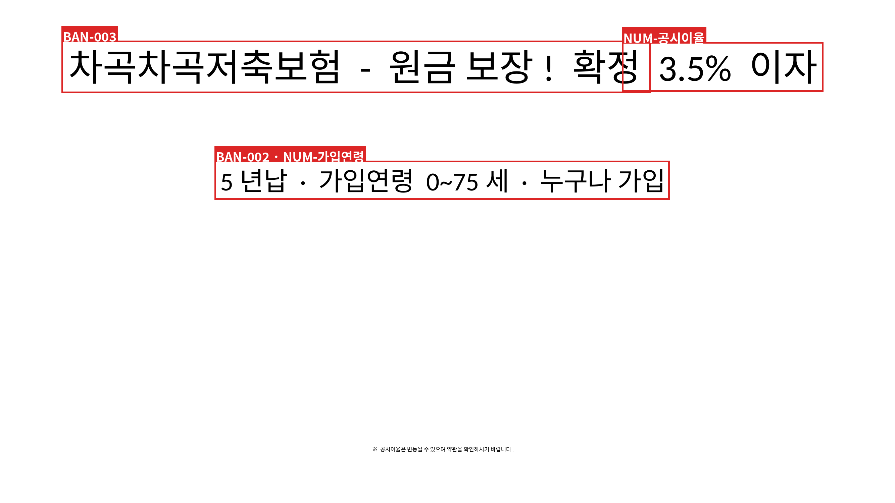
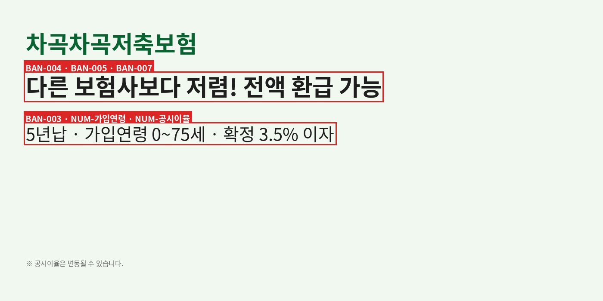

페이지 1개 · 식별 상품: DEMO-CANCER-01 · 상품군: renewable
적용 제외 룰: REQ-002 예금자보호 관련 안내 (상품군 불일치로 제외); REQ-005 해지환급금 관련 안내 (상품군 불일치로 제외)
○ 적합 · × 부적합 · △ 미흡 · - 해당사항 없음 · ? 자동판정 불가(담당자 확인). × 는 문구 누락/금지 표현 검출이며 OCR 누락일 수 있고, ○ 는 자동 패턴이 포착한 범위 안에서만 의미가 있습니다.
| No. | 구분 | 점검 항목 | 확인 | 자동 판정 근거 / 비고 | 규정 |
|---|---|---|---|---|---|
| 1-1 | 경고문구 | 해약환급금/만기보험금의 변동가능성 | - | 적용 조건(상품군·해당 문구)에 해당하지 않아 해당 없음으로 처리 | 규정 §20-③-1 |
| 1-2 | 예시된 해약환급금/보험금 등 수익률이 미래를 보장하지 않음 | - | 적용 조건(상품군·해당 문구)에 해당하지 않아 해당 없음으로 처리 | 규정 §20-③-2 | |
| 1-3 | 갱신형상품 경고문구 표시 | ○ | 필수 문구 확인됨 image 에서 확인됨: “갱신시보험료가인상” | 규정 §20-② | |
| 1-4 | 갱신형상품 경고문구 안내방법 준수 | ○ | 글자 크기 자동 점검에서 이상 없음. 글자 크기는 OCR 글자 높이/PPT pt 로 자동 점검합니다. 글자 색상·위치·노출 시간 등은 육안 확인하세요. | 규정 §20-④(§21-②) | |
| 1-5 | 표시기준 준수 | ? | 표시기준(§21의4) 준수 여부는 자동 판정하지 않습니다. (담당자 확인 항목) | 규정 §21의4-①/② | |
| 2-1 | 필수안내사항 | 상품설명서 및 약관 참조 안내예시 문구보험가입 전에 본 상품설명서 및 약관을 확인하시기 바랍니다 | ○ | 필수 문구 확인됨 image 에서 확인됨: “약관” | 규정 §21-①-1 |
| 2-2 | 회사 등의 명칭(보험대리점의 경우 협회 등록번호 포함)예시 문구(보험회사) ○○생명보험 / (법인대리점) ○○보험대리점(○○○○○○) | × | 회사명(보험사·보험대리점)으로 볼 만한 문구를 찾지 못했습니다. | 규정 §21-①-2 | |
| 2-3 | 보험상품의 명칭예시 문구약관상 명칭 사용 (동일성 인정 범위내 명칭 일부 사용가능) | ○ | 상품명 확인: (예시)든든암보험 상품명 “든든암보험” | 규정 §21-①-3 | |
| 2-4 | 기존계약 해지후 신계약 체결시 불이익 사항예시 문구보험계약자가 기존 보험계약을 해지하고 새로운 보험계약을 체결할 경우 인수거절, 보험료 인상, 보장내용 축소 등 불이익이 생길 수 있습니다. | △ | 미확인: 기존계약 해지 후 신계약 체결 언급 (OCR 누락 가능성은 원본에서 확인) 불이익 내용(인수거절·보험료 인상·보장 축소): “보험료가인상” (image) | 규정 §21-①-4 | |
| 2-5 | 보험금 지급제한 사유예시 문구<노출하는 보장내용 관련 주요 지급제한사항> 지급횟수, 한도, 보험금 감액지급내용, 보장개시일, 중복가입 시 비례보상에 관한 사항, 약관에서 정한 질병구분, 일반사망보험금의 경우 '고의적사고 및 2년이내 자살 제외' 등 | ○ | 필수 문구 확인됨 image 에서 확인됨: “면책” | 규정 §21-①-5 | |
| 2-6 | 이자율의 범위/산출기준(저축성보험의 금리연동형상품)예시 문구"현재 공시이율에서 기준금리에 따라 매월 변동", "시장금리를 반영하여 변동 가능" 등 | - | 적용 조건(상품군·해당 문구)에 해당하지 않아 해당 없음으로 처리 | 규정 §21-①-6 | |
| 2-7 | 설명의무 고지사항예시 문구○○사 및 모집종사자는 해당 상품에 대해 충분히 설명할 의무가 있으며, 가입자는 가입에 앞서 이에 대한 충분한 설명을 받으시기 바랍니다. | × | 미확인: 설명의무 안내 (OCR 누락 가능성은 원본에서 확인) | 규정 §21-①-7 | |
| 2-8 | 법령/내부통제기준 관련 절차준수 사항예시 문구(협회 심의필번호 또는 회사 준법감시인 심의필로 대체 가능) → 생명보험협회 심의필 제○○호 (20xx.xx.xx. ~ 20xx.xx.xx.) | × | 해당 문구를 찾지 못했습니다 (OCR 누락 가능성은 원본에서 확인) | 규정 §21-①-8 | |
| 2-9 | 예금자보호법예시 문구이 보험계약은 예금자보호법에 따라 예금보험공사가 보호하되, 보호한도는 본 보험회사에 있는 귀하의 모든 예금보호대상 금융상품의 해지환급금 (또는 만기시 보험금이나 사고보험금)에 기타지급금을 합하여 1인당 "최고 5천만원"이며, 5천만원을 초과하는 나머지 금액은 보호하지 않습니다. | × | 미확인: 예금자보호법 언급, 예금보험공사, 보호한도 1인당 5천만원, 한도 초과분 비보호 (OCR 누락 가능성은 원본에서 확인) | 규정 §21-①-9 | |
| 2-10 | 금융상품판매 대리ㆍ중개 업무 수행관련 고지사항예시 문구① “해당 모집종사자는 ○○사와 전속계약을 체결한 보험설계사(보험대리점)입니다.” 또는 “해당 모집종사자는 다수의 보험사와 계약 체결 및 대리·중개하는 보험설계사(보험대리점)입니다.” ② “해당 모집종사자는 보험사로부터 보험계약체결권을 부여받지 아니한 금융상품판매 대리·중개업자임을 알려드립니다.” | × | 미확인: 모집종사자 지위 고지(전속/다수/체결권 없음) (OCR 누락 가능성은 원본에서 확인) | 규정 §21-①-10 | |
| 2-11 | 광고 유효기간예시 문구생명보험협회 심의필 제○○호 (20xx.xx.xx. ~ 20xx.xx.xx.) | × | 심의필 번호와 유효기간을 찾지 못했습니다. | 규정 §21-①-11 | |
| 2-12 | 통계 인용시 해당자료 출처예시 문구①자료명, ②발표기관, ③발표일자 반드시 포함 ※ (서베이자료) 조사대상(성별/인원 등) 추가 표기 | - | 적용 조건(상품군·해당 문구)에 해당하지 않아 해당 없음으로 처리 | 규정 §21-①-12 | |
| 2-13 | 연계ㆍ제휴서비스 등 관련 충족요건예시 문구(경품 제공조건 등 구체적 명기) → 7일내 상담완료시, 고객당 월 1회한 등 | - | 적용 조건(상품군·해당 문구)에 해당하지 않아 해당 없음으로 처리 | 규정 §21-①-13 | |
| 2-14 | 보험료･보험금 관련사항(보험료･보험금 노출 광고)예시 문구(주계약 보장내용) 지급사유 - 보험금액 / (특약 보장내용) 지급사유 - 보험금액 / (보험료) 남녀별로 30세, 40세, 50세(또는 35세, 40세, 45세) 등 세가지 이상 도표로 예시 / (해약환급금) 해약환급금 예시표(1,3,5년은 반드시 포함하되 10년, 15년 등 만기까지 안내), 중도해지시 납입한 보험료보다 적거나 없을 수 있다는 내용 | ○ | 필요 요소가 모두 확인됨 | 적용 근거: “진단비최대7,000만원” 보험금액(지급사유별): “암진단비최대7,000만원소액암진단비1,000만원” (image) | 규정 §21-①-15 | |
| 2-15 | 보험기간 및 납입기간예시 문구○○세 만기, ○○년납 | ○ | 필요 요소가 모두 확인됨 보험기간(○○세/○○년 만기): “20년만기” (image) · 납입기간(○○년납): “20년납” (image) | 규정 §21-①-16 | |
| 2-16 | 청약철회 및 품질보증해지예시 문구(청약철회) 보험증권(보험가입증서)을 받은 날부터 15일 이내에 청약철회 가능 (단, 청약일부터 최대 30일 이내 / 만 65세 이상은 45일 이내), 청약철회 접수일로부터 3일 이내 납입보험료 전액 환급 / (품질보증해지) 아래 3가지 중 1개라도 해당하는 경우 계약이 성립한 날로부터 3개월 이내에 계약 취소 가능 ① 약관 및 청약서를 받지 못한 경우 ② 청약시 약관의 중요내용을 설명받지 못한 경우 ③ 청약서에 자필서명(전자서명 포함)이 없는 경우, 납입보험료 전액과 정해진 이자를 환급 | × | 미확인: 청약철회 안내, 청약철회 기간(15일 이내), 품질보증해지 안내, 품질보증해지 기간(3개월 이내) (OCR 누락 가능성은 원본에서 확인) | 규정 §21-①-17 | |
| 2-17 | 계약전 알릴 의무예시 문구① 보험계약자 및 피보험자는 직업, 질병사항 등 보험사가 질문한 중요한 사항을 반드시 알려야 합니다. ② 보험사가 질문한 중요한 사항을 알리지 않은 경우 해당 보험계약이 해지되거나, 보험금을 지급받지 못할 수도 있습니다. | × | 미확인: 알릴 의무 안내(직업·질병 등 중요사항), 불이행 시 불이익(해지·보험금 미지급) (OCR 누락 가능성은 원본에서 확인) | 규정 §21-①-18 | |
| 2-18 | 갱신보험료 예시(홈쇼핑 판매방송 등 영상 상품광고)예시 문구(기준 연령) 남자 또는 여자 40세 / (갱신 횟수) 5년만기 : 3회차 이상, 10년만기 : 1회차 이상 / [자막 예시 : 5년 만기] 남자 40세, 5년 만기, 5년간 매월납입, △△보험 주계약, ○○보장특약 | - | 영상(홈쇼핑 판매방송 등) 광고 전용 항목 — 정지 이미지·PPT 는 해당 없음. 영상 광고는 담당자가 확인하세요. (담당자 확인 항목) | 규정 §21-①-19 | |
| 2-19 | 기타 위원회가 정한 사항 | ? | 위원회가 별도로 정한 사항은 자동 판정하지 않습니다. (담당자 확인 항목) | 규정 §21-①-20 | |
| 2-20 | 필수안내사항 안내방법 준수여부 | ○ | 글자 크기 자동 점검에서 이상 없음. 글자 크기는 OCR 글자 높이/PPT pt 로 자동 점검합니다. 글자 색상·위치·노출 시간 등은 육안 확인하세요. | 규정 §21 ①～⑥ | |
| 2-21 | 표시기준 준수 | ? | 표시기준(§21의4) 준수 여부는 자동 판정하지 않습니다. (담당자 확인 항목) | 규정 §21의4-①/② | |
| 3-1 | 준수사항 | 글자 색깔ㆍ크기 또는 음성의 속도ㆍ크기 등 전달 기준 | ○ | 글자 크기 자동 점검에서 이상 없음. 글자 크기는 OCR 글자 높이/PPT pt 로 자동 점검합니다. 색상 대비·음성(속도·크기)은 육안/청취 확인하세요. | 규정 §22-① |
| 3-2 | 준법감시인 심의 | × | 해당 문구를 찾지 못했습니다 (OCR 누락 가능성은 원본에서 확인) | 규정 §22-② | |
| 3-3 | 홈쇼핑 판매방송 등 영상 광고시 상품설명 자격 안내 | - | 영상(홈쇼핑 판매방송 등) 광고 전용 항목 — 정지 이미지·PPT 는 해당 없음. (담당자 확인 항목) | 규정 §22-③ | |
| 3-4 | 보장내용 표시 명확화 | ? | 보장내용 표시의 명확성은 자동 판정하지 않습니다. 수치 불일치는 '4-1' 및 '검토 필요 항목'을 참고하세요. (담당자 확인 항목) | 규정 §22-④ | |
| 3-5 | 보험료 예시 기준 | - | 해당 요소가 노출되지 않아 해당 없음 (항목 2-14 기준) | 규정 §22-⑤ | |
| 3-6 | 만기환급금 및 해약환급금 예시 기준 | - | 해당 요소가 노출되지 않아 해당 없음 (항목 2-14 기준) | 규정 §22-⑥ | |
| 3-7 | 보험상품이미지광고 규정 준수여부 | ? | 이미지광고 규정 준수 여부는 자동 판정하지 않습니다. (담당자 확인 항목) | 규정 §22-⑦ | |
| 4-1 | 금지행위 | 허위사실을 안내하거나 중요한 사실의 미안내 | × | 검출: “7,000만원” (image), “20~70세” (image) “7,000만원” (image) · “20~70세” (image) | 규정 §24-①-1 |
| 4-2 | 보험업법, 표시광고법 등 위반 | ? | 법령 위반 여부는 자동 판정하지 않습니다. (담당자 확인 항목) | 규정 §24-①-2 | |
| 4-3 | 극단적, 단정적 표현 사용 | × | 검출: “최고” (image), “최대” (image), “무조건” (image), “100%” (image) “최고” (image) · “최대” (image) · “무조건” (image) · “100%” (image) | 규정 §24-①-3 | |
| 4-4 | 보장내용 과장․허위 표현의 사용 | ○ | 자동 패턴 미검출 (패턴 범위 밖의 위반은 걸러내지 못합니다) | 규정 §24-①-4 | |
| 4-5 | 부적절한 보험료 안내 | × | 검출: “저렴” (image) “저렴” (image) | 규정 §24-①-5 | |
| 4-6 | 해약환급금, 보험금 예시기준 금지행위 | ○ | 자동 패턴 미검출 (패턴 범위 밖의 위반은 걸러내지 못합니다) | 규정 §24-①-6 | |
| 4-7 | 역선택 조장 또는 자극적 표현 사용 | × | 검출: “지금바로가입” (image) “지금바로가입” (image) | 규정 §24-①-7 | |
| 4-8 | 부적절한 자료인용 | △ | 최상급·순위 표현 “최고”, “최대” 의 근거(출처·기준일) 표기를 찾지 못했습니다. 최고 · 최대 | 규정 §24-①-8 | |
| 4-9 | 부적절한 비교행위 | × | 검출: “타사보다” (image), “대한민국최고” (image) “타사보다” (image) · “대한민국최고” (image) | 규정 §24-①-9 | |
| 4-10 | 불확실한 사항에 대한 오인유발 표현 | ○ | 자동 패턴 미검출 (패턴 범위 밖의 위반은 걸러내지 못합니다) | 규정 §24-①-10 | |
| 4-11 | 금융소비자 권리･의무 등 관련 중요사실 미안내 등 | △ | 필수안내 미비로 권리·의무 안내가 부족할 수 있습니다: 2-4 기존계약 해지후 신계약 체결시 불이익 사항(△), 2-7 설명의무 고지사항(×), 2-9 예금자보호법(×), 2-16 청약철회 및 품질보증해지(×), 2-17 계약전 알릴 의무(×) | 규정 §24-①-11 | |
| 4-12 | 건전한 거래질서 위해할 수 있는 표현 등 | ? | 자동 패턴 미검출 (패턴 범위 밖의 위반은 걸러내지 못합니다) — 자동 패턴 범위가 좁아 담당자 확인이 필요합니다. | 규정 §24-①-12 | |
| 4-13 | 경품제공 관련 규정 미준수 | - | 경품 제공 문구가 없어 해당 없음으로 처리 | 규정 §24-④ |
| 중요도 | 룰 | 항목 | 위치 | 상세 |
|---|---|---|---|---|
| 높음 | REQ-001 | 필수 문구 누락 의심: 심의필 번호 표기 | ad_cancer_bad.png | 검토 대상 1개 페이지(슬라이드) 어디에서도 해당 문구를 찾지 못했습니다. (OCR 누락 가능성이 있으니 원본 확인) 근거: (예시) 광고심의 규정 제○조 - 심의필 번호 표기 |
| 높음 | BAN-001 | 과장 표현 의심: “최고” | ad_cancer_bad.png / image | 최상급·순위 표현 - 객관적 근거(출처·기준일) 병기 여부 확인 | 문맥: 대한민국 최고의 암보험!무조건 100% 보장 |
| 높음 | BAN-001 | 과장 표현 의심: “최대” | ad_cancer_bad.png / image | 최상급·순위 표현 - 객관적 근거(출처·기준일) 병기 여부 확인 | 문맥: 암 진단비 최대 7,000만원 |
| 높음 | BAN-002 | 단정·절대 표현 의심: “무조건” | ad_cancer_bad.png / image | 단정적·절대적 표현 | 문맥: 대한민국 최고의 암보험!무조건 100% 보장 |
| 높음 | BAN-002 | 단정·절대 표현 의심: “100%” | ad_cancer_bad.png / image | 단정적·절대적 표현 | 문맥: 대한민국 최고의 암보험!무조건 100% 보장 |
| 높음 | BAN-005 | 비교 표현 의심: “타사보다” | ad_cancer_bad.png / image | 타사 비교 표현 | 문맥: 타사보다 저렴한 보험료,지금 바로 가입하세요 |
| 높음 | NUM-암진단비 | 수치 불일치 의심: 암진단비 7,000만원 | ad_cancer_bad.png / image | 광고 표기 7,000만원 ↔ 상품 마스터 기준 [(예시)든든암보험: 3000만원/5000만원] (암 진단 시 지급 보험금 (일반암)). OCR 숫자 오인식 가능성도 함께 확인하세요. | 문맥: 암 진단비 최대 7,000만원 |
| 높음 | NUM-가입연령 | 수치 불일치 의심: 가입연령 20~70세 | ad_cancer_bad.png / image | 광고 표기 20~70세 ↔ 상품 마스터 기준 [(예시)든든암보험: 20~65세] (가입 가능 연령). OCR 숫자 오인식 가능성도 함께 확인하세요. | 문맥: 소액암 진단비 1,000만원·가입연령 20~70세 |
| 중간 | BAN-006 | 조급 유발 표현 의심: “지금바로가입” | ad_cancer_bad.png / image | 조급·충동 유발 표현 | 문맥: 타사보다 저렴한 보험료,지금 바로 가입하세요 |
| 중간 | BAN-007 | 과장 표현 의심: “저렴” | ad_cancer_bad.png / image | 비교 기준이 불명확한 주관적 강조 표현 | 문맥: 타사보다 저렴한 보험료,지금 바로 가입하세요 |

| 룰 | 항목 | 위치 | 상세 |
|---|---|---|---|
| REQ-003 | 필수 문구 확인: 약관·상품설명서 확인 안내 | ad_cancer_bad.png / image | image 에서 확인됨: “약관” |
| REQ-004 | 필수 문구 확인: 갱신형 보험료 인상 가능 안내 | ad_cancer_bad.png / image | image 에서 확인됨: “갱신시보험료가인상” |
| REQ-006 | 필수 문구 확인: 보험금 지급 제한(면책·감액) 안내 | ad_cancer_bad.png / image | image 에서 확인됨: “면책” |
| NUM-소액암진단비 | 수치 일치: 소액암진단비 1,000만원 | ad_cancer_bad.png / image | 상품 마스터와 일치 ((예시)든든암보험: 600만원/1000만원) | 문맥: 소액암 진단비 1,000만원·가입연령 20~70세 |
| NUM-보험기간 | 수치 일치: 보험기간 20년 | ad_cancer_bad.png / image | 상품 마스터와 일치 ((예시)든든암보험: 10년/20년) | 문맥: 20년납 20년만기· 보장개시 후 90일 면책 |
| NUM-면책기간 | 수치 일치: 면책기간 90일 | ad_cancer_bad.png / image | 상품 마스터와 일치 ((예시)든든암보험: 90일) | 문맥: 20년납 20년만기· 보장개시 후 90일 면책 |
[O:main/paddle 100] 든든암보험 [O:main/paddle 97] 대한민국 최고의 암보험!무조건 100% 보장 [O:main/paddle 98] 타사보다 저렴한 보험료,지금 바로 가입하세요 [O:main/paddle 96] 암 진단비 최대 7,000만원 [O:main/paddle 97] 소액암 진단비 1,000만원·가입연령 20~70세 [O:main/paddle 94] 20년납 20년만기· 보장개시 후 90일 면책 [O:main/paddle 93] ※자세한 보장내용은 약관을 확인하시기바랍니다. [O:main/paddle 99] ※갱신형 상품으로 갱신 시 보험료가 인상될 수 있습니다.
페이지 3개 · 식별 상품: DEMO-SAVING-01 · 상품군: savings
적용 제외 룰: REQ-004 갱신형 보험료 인상 가능 안내 (상품군 불일치로 제외)
○ 적합 · × 부적합 · △ 미흡 · - 해당사항 없음 · ? 자동판정 불가(담당자 확인). × 는 문구 누락/금지 표현 검출이며 OCR 누락일 수 있고, ○ 는 자동 패턴이 포착한 범위 안에서만 의미가 있습니다.
| No. | 구분 | 점검 항목 | 확인 | 자동 판정 근거 / 비고 | 규정 |
|---|---|---|---|---|---|
| 1-1 | 경고문구 | 해약환급금/만기보험금의 변동가능성 | ○ | 필요 요소가 모두 확인됨 | 적용 근거: “공시이율” 변동 가능성 안내: “공시이율은변동” (slide 1) | 규정 §20-③-1 |
| 1-2 | 예시된 해약환급금/보험금 등 수익률이 미래를 보장하지 않음 | - | 적용 조건(상품군·해당 문구)에 해당하지 않아 해당 없음으로 처리 | 규정 §20-③-2 | |
| 1-3 | 갱신형상품 경고문구 표시 | - | REQ-004: 상품군 불일치로 적용 제외 | 규정 §20-② | |
| 1-4 | 갱신형상품 경고문구 안내방법 준수 | △ | 글자 크기 의심 1건 — 유의·단서 문구 글자 크기 작음 (PPT 텍스트) | 규정 §20-④(§21-②) | |
| 1-5 | 표시기준 준수 | ? | 표시기준(§21의4) 준수 여부는 자동 판정하지 않습니다. (담당자 확인 항목) | 규정 §21의4-①/② | |
| 2-1 | 필수안내사항 | 상품설명서 및 약관 참조 안내예시 문구보험가입 전에 본 상품설명서 및 약관을 확인하시기 바랍니다 | ○ | 필수 문구 확인됨 slide 1 에서 확인됨: “약관” | 규정 §21-①-1 |
| 2-2 | 회사 등의 명칭(보험대리점의 경우 협회 등록번호 포함)예시 문구(보험회사) ○○생명보험 / (법인대리점) ○○보험대리점(○○○○○○) | × | 회사명(보험사·보험대리점)으로 볼 만한 문구를 찾지 못했습니다. | 규정 §21-①-2 | |
| 2-3 | 보험상품의 명칭예시 문구약관상 명칭 사용 (동일성 인정 범위내 명칭 일부 사용가능) | ○ | 상품명 확인: (예시)차곡차곡저축보험 상품명 “차곡차곡저축보험” | 규정 §21-①-3 | |
| 2-4 | 기존계약 해지후 신계약 체결시 불이익 사항예시 문구보험계약자가 기존 보험계약을 해지하고 새로운 보험계약을 체결할 경우 인수거절, 보험료 인상, 보장내용 축소 등 불이익이 생길 수 있습니다. | × | 미확인: 기존계약 해지 후 신계약 체결 언급, 불이익 내용(인수거절·보험료 인상·보장 축소) (OCR 누락 가능성은 원본에서 확인) | 규정 §21-①-4 | |
| 2-5 | 보험금 지급제한 사유예시 문구<노출하는 보장내용 관련 주요 지급제한사항> 지급횟수, 한도, 보험금 감액지급내용, 보장개시일, 중복가입 시 비례보상에 관한 사항, 약관에서 정한 질병구분, 일반사망보험금의 경우 '고의적사고 및 2년이내 자살 제외' 등 | × | 해당 문구를 찾지 못했습니다 (OCR 누락 가능성은 원본에서 확인) | 규정 §21-①-5 | |
| 2-6 | 이자율의 범위/산출기준(저축성보험의 금리연동형상품)예시 문구"현재 공시이율에서 기준금리에 따라 매월 변동", "시장금리를 반영하여 변동 가능" 등 | ○ | 필요 요소가 모두 확인됨 | 적용 근거: “공시이율” 이자율 변동·산출기준 안내: “이자5년납·가입연령0~75세·누구나가입※공시이율은변동” (slide 1) | 규정 §21-①-6 | |
| 2-7 | 설명의무 고지사항예시 문구○○사 및 모집종사자는 해당 상품에 대해 충분히 설명할 의무가 있으며, 가입자는 가입에 앞서 이에 대한 충분한 설명을 받으시기 바랍니다. | × | 미확인: 설명의무 안내 (OCR 누락 가능성은 원본에서 확인) | 규정 §21-①-7 | |
| 2-8 | 법령/내부통제기준 관련 절차준수 사항예시 문구(협회 심의필번호 또는 회사 준법감시인 심의필로 대체 가능) → 생명보험협회 심의필 제○○호 (20xx.xx.xx. ~ 20xx.xx.xx.) | ○ | 필수 문구 확인됨 slide 3 에서 확인됨: “심의필” | 규정 §21-①-8 | |
| 2-9 | 예금자보호법예시 문구이 보험계약은 예금자보호법에 따라 예금보험공사가 보호하되, 보호한도는 본 보험회사에 있는 귀하의 모든 예금보호대상 금융상품의 해지환급금 (또는 만기시 보험금이나 사고보험금)에 기타지급금을 합하여 1인당 "최고 5천만원"이며, 5천만원을 초과하는 나머지 금액은 보호하지 않습니다. | × | 미확인: 예금자보호법 언급, 예금보험공사, 보호한도 1인당 5천만원, 한도 초과분 비보호 (OCR 누락 가능성은 원본에서 확인) | 규정 §21-①-9 | |
| 2-10 | 금융상품판매 대리ㆍ중개 업무 수행관련 고지사항예시 문구① “해당 모집종사자는 ○○사와 전속계약을 체결한 보험설계사(보험대리점)입니다.” 또는 “해당 모집종사자는 다수의 보험사와 계약 체결 및 대리·중개하는 보험설계사(보험대리점)입니다.” ② “해당 모집종사자는 보험사로부터 보험계약체결권을 부여받지 아니한 금융상품판매 대리·중개업자임을 알려드립니다.” | × | 미확인: 모집종사자 지위 고지(전속/다수/체결권 없음) (OCR 누락 가능성은 원본에서 확인) | 규정 §21-①-10 | |
| 2-11 | 광고 유효기간예시 문구생명보험협회 심의필 제○○호 (20xx.xx.xx. ~ 20xx.xx.xx.) | △ | 심의필 표기는 있으나 ‘시작일 ~ 종료일’ 형식의 유효기간을 찾지 못했습니다. | 규정 §21-①-11 | |
| 2-12 | 통계 인용시 해당자료 출처예시 문구①자료명, ②발표기관, ③발표일자 반드시 포함 ※ (서베이자료) 조사대상(성별/인원 등) 추가 표기 | - | 적용 조건(상품군·해당 문구)에 해당하지 않아 해당 없음으로 처리 | 규정 §21-①-12 | |
| 2-13 | 연계ㆍ제휴서비스 등 관련 충족요건예시 문구(경품 제공조건 등 구체적 명기) → 7일내 상담완료시, 고객당 월 1회한 등 | - | 적용 조건(상품군·해당 문구)에 해당하지 않아 해당 없음으로 처리 | 규정 §21-①-13 | |
| 2-14 | 보험료･보험금 관련사항(보험료･보험금 노출 광고)예시 문구(주계약 보장내용) 지급사유 - 보험금액 / (특약 보장내용) 지급사유 - 보험금액 / (보험료) 남녀별로 30세, 40세, 50세(또는 35세, 40세, 45세) 등 세가지 이상 도표로 예시 / (해약환급금) 해약환급금 예시표(1,3,5년은 반드시 포함하되 10년, 15년 등 만기까지 안내), 중도해지시 납입한 보험료보다 적거나 없을 수 있다는 내용 | - | 적용 조건(상품군·해당 문구)에 해당하지 않아 해당 없음으로 처리 | 규정 §21-①-15 | |
| 2-15 | 보험기간 및 납입기간예시 문구○○세 만기, ○○년납 | △ | 미확인: 보험기간(○○세/○○년 만기) (OCR 누락 가능성은 원본에서 확인) 납입기간(○○년납): “5년납” (slide 1) | 규정 §21-①-16 | |
| 2-16 | 청약철회 및 품질보증해지예시 문구(청약철회) 보험증권(보험가입증서)을 받은 날부터 15일 이내에 청약철회 가능 (단, 청약일부터 최대 30일 이내 / 만 65세 이상은 45일 이내), 청약철회 접수일로부터 3일 이내 납입보험료 전액 환급 / (품질보증해지) 아래 3가지 중 1개라도 해당하는 경우 계약이 성립한 날로부터 3개월 이내에 계약 취소 가능 ① 약관 및 청약서를 받지 못한 경우 ② 청약시 약관의 중요내용을 설명받지 못한 경우 ③ 청약서에 자필서명(전자서명 포함)이 없는 경우, 납입보험료 전액과 정해진 이자를 환급 | × | 미확인: 청약철회 안내, 청약철회 기간(15일 이내), 품질보증해지 안내, 품질보증해지 기간(3개월 이내) (OCR 누락 가능성은 원본에서 확인) | 규정 §21-①-17 | |
| 2-17 | 계약전 알릴 의무예시 문구① 보험계약자 및 피보험자는 직업, 질병사항 등 보험사가 질문한 중요한 사항을 반드시 알려야 합니다. ② 보험사가 질문한 중요한 사항을 알리지 않은 경우 해당 보험계약이 해지되거나, 보험금을 지급받지 못할 수도 있습니다. | × | 미확인: 알릴 의무 안내(직업·질병 등 중요사항), 불이행 시 불이익(해지·보험금 미지급) (OCR 누락 가능성은 원본에서 확인) | 규정 §21-①-18 | |
| 2-18 | 갱신보험료 예시(홈쇼핑 판매방송 등 영상 상품광고)예시 문구(기준 연령) 남자 또는 여자 40세 / (갱신 횟수) 5년만기 : 3회차 이상, 10년만기 : 1회차 이상 / [자막 예시 : 5년 만기] 남자 40세, 5년 만기, 5년간 매월납입, △△보험 주계약, ○○보장특약 | - | 영상(홈쇼핑 판매방송 등) 광고 전용 항목 — 정지 이미지·PPT 는 해당 없음. 영상 광고는 담당자가 확인하세요. (담당자 확인 항목) | 규정 §21-①-19 | |
| 2-19 | 기타 위원회가 정한 사항 | ? | 위원회가 별도로 정한 사항은 자동 판정하지 않습니다. (담당자 확인 항목) | 규정 §21-①-20 | |
| 2-20 | 필수안내사항 안내방법 준수여부 | △ | 글자 크기 의심 1건 — 유의·단서 문구 글자 크기 작음 (PPT 텍스트) | 규정 §21 ①～⑥ | |
| 2-21 | 표시기준 준수 | ? | 표시기준(§21의4) 준수 여부는 자동 판정하지 않습니다. (담당자 확인 항목) | 규정 §21의4-①/② | |
| 3-1 | 준수사항 | 글자 색깔ㆍ크기 또는 음성의 속도ㆍ크기 등 전달 기준 | △ | 글자 크기 의심 1건 — 유의·단서 문구 글자 크기 작음 (PPT 텍스트) | 규정 §22-① |
| 3-2 | 준법감시인 심의 | ○ | 필수 문구 확인됨 slide 3 에서 확인됨: “심의필” | 규정 §22-② | |
| 3-3 | 홈쇼핑 판매방송 등 영상 광고시 상품설명 자격 안내 | - | 영상(홈쇼핑 판매방송 등) 광고 전용 항목 — 정지 이미지·PPT 는 해당 없음. (담당자 확인 항목) | 규정 §22-③ | |
| 3-4 | 보장내용 표시 명확화 | ? | 보장내용 표시의 명확성은 자동 판정하지 않습니다. 수치 불일치는 '4-1' 및 '검토 필요 항목'을 참고하세요. (담당자 확인 항목) | 규정 §22-④ | |
| 3-5 | 보험료 예시 기준 | - | 2-14 가 해당 없음이므로 해당 없음 | 규정 §22-⑤ | |
| 3-6 | 만기환급금 및 해약환급금 예시 기준 | - | 2-14 가 해당 없음이므로 해당 없음 | 규정 §22-⑥ | |
| 3-7 | 보험상품이미지광고 규정 준수여부 | ? | 이미지광고 규정 준수 여부는 자동 판정하지 않습니다. (담당자 확인 항목) | 규정 §22-⑦ | |
| 4-1 | 금지행위 | 허위사실을 안내하거나 중요한 사실의 미안내 | × | 검출: “0~75세” (slide 1), “3.5%” (slide 1) “0~75세” (slide 1) · “3.5%” (slide 1) | 규정 §24-①-1 |
| 4-2 | 보험업법, 표시광고법 등 위반 | ? | 법령 위반 여부는 자동 판정하지 않습니다. (담당자 확인 항목) | 규정 §24-①-2 | |
| 4-3 | 극단적, 단정적 표현 사용 | × | 검출: “누구나” (slide 1) “누구나” (slide 1) | 규정 §24-①-3 | |
| 4-4 | 보장내용 과장․허위 표현의 사용 | × | 검출: “전액환급” (slide 2) “전액환급” (slide 2) | 규정 §24-①-4 | |
| 4-5 | 부적절한 보험료 안내 | × | 검출: “저렴” (slide 2) “저렴” (slide 2) | 규정 §24-①-5 | |
| 4-6 | 해약환급금, 보험금 예시기준 금지행위 | × | 검출: “원금보장” (slide 1), “확정3.5%” (slide 1) “원금보장” (slide 1) · “확정3.5%” (slide 1) | 규정 §24-①-6 | |
| 4-7 | 역선택 조장 또는 자극적 표현 사용 | ○ | 자동 패턴 미검출 (패턴 범위 밖의 위반은 걸러내지 못합니다) | 규정 §24-①-7 | |
| 4-8 | 부적절한 자료인용 | - | 통계·순위 인용이 없어 해당 없음 | 규정 §24-①-8 | |
| 4-9 | 부적절한 비교행위 | × | 검출: “다른보험사보다” (slide 2) “다른보험사보다” (slide 2) | 규정 §24-①-9 | |
| 4-10 | 불확실한 사항에 대한 오인유발 표현 | × | 검출: “원금보장” (slide 1), “확정3.5%” (slide 1) “원금보장” (slide 1) · “확정3.5%” (slide 1) | 규정 §24-①-10 | |
| 4-11 | 금융소비자 권리･의무 등 관련 중요사실 미안내 등 | △ | 필수안내 미비로 권리·의무 안내가 부족할 수 있습니다: 2-4 기존계약 해지후 신계약 체결시 불이익 사항(×), 2-7 설명의무 고지사항(×), 2-9 예금자보호법(×), 2-16 청약철회 및 품질보증해지(×), 2-17 계약전 알릴 의무(×) | 규정 §24-①-11 | |
| 4-12 | 건전한 거래질서 위해할 수 있는 표현 등 | ? | 자동 패턴 미검출 (패턴 범위 밖의 위반은 걸러내지 못합니다) — 자동 패턴 범위가 좁아 담당자 확인이 필요합니다. | 규정 §24-①-12 | |
| 4-13 | 경품제공 관련 규정 미준수 | - | 경품 제공 문구가 없어 해당 없음으로 처리 | 규정 §24-④ |
| 중요도 | 룰 | 항목 | 위치 | 상세 |
|---|---|---|---|---|
| 높음 | REQ-002 | 필수 문구 누락 의심: 예금자보호 관련 안내 | ad_savings_deck.pptx | 검토 대상 3개 페이지(슬라이드) 어디에서도 해당 문구를 찾지 못했습니다. (OCR 누락 가능성이 있으니 원본 확인) 근거: (예시) 광고심의 규정 제○조 - 예금자보호 안내 |
| 높음 | REQ-005 | 필수 문구 누락 의심: 해지환급금 관련 안내 | ad_savings_deck.pptx | 검토 대상 3개 페이지(슬라이드) 어디에서도 해당 문구를 찾지 못했습니다. (OCR 누락 가능성이 있으니 원본 확인) 근거: (예시) 광고심의 규정 제○조 - 해지환급금 안내 |
| 높음 | BAN-002 | 단정·절대 표현 의심: “누구나” | ad_savings_deck.pptx / slide 1 | 단정적·절대적 표현 | 문맥: 5년납·가입연령 0~75세·누구나 가입 |
| 높음 | BAN-003 | 보장·확정 표현 의심: “원금보장” | ad_savings_deck.pptx / slide 1 | 원금·수익 보장 오인 소지 | 문맥: 차곡차곡저축보험-원금 보장! 확정 |
| 높음 | BAN-003 | 보장·확정 표현 의심: “확정3.5%” | ad_savings_deck.pptx / slide 1 | 원금·수익 보장 오인 소지 | 문맥: 차곡차곡저축보험 - 원금 보장! 확정 3.5% 이자 |
| 높음 | NUM-가입연령 | 수치 불일치 의심: 가입연령 0~75세 | ad_savings_deck.pptx / slide 1 | 광고 표기 0~75세 ↔ 상품 마스터 기준 [(예시)차곡차곡저축보험: 0~70세] (가입 가능 연령). OCR 숫자 오인식 가능성도 함께 확인하세요. | 문맥: 5년납·가입연령 0~75세·누구나 가입 |
| 높음 | NUM-공시이율 | 수치 불일치 의심: 공시이율 3.5% | ad_savings_deck.pptx / slide 1 | 광고 표기 3.5% ↔ 상품 마스터 기준 [(예시)차곡차곡저축보험: 3% 이하] (공시이율 (변동, 예시)). OCR 숫자 오인식 가능성도 함께 확인하세요. | 문맥: 정3.5%이자 |
| 높음 | BAN-003 | 보장·확정 표현 의심: “확정3.5%” | ad_savings_deck.pptx / slide 2 | 원금·수익 보장 오인 소지 | 문맥: 5년납·가입연령0~75세·확정3.5%이자 |
| 높음 | BAN-004 | 과장 표현 의심: “전액환급” | ad_savings_deck.pptx / slide 2 | 보장범위 과장 소지 - 약관상 제한(면책·감액·한도)과 일치 여부 확인 | 문맥: 다른 보험사보다 저렴! 전액 환급 가능 |
| 높음 | BAN-005 | 비교 표현 의심: “다른보험사보다” | ad_savings_deck.pptx / slide 2 | 타사 비교 표현 | 문맥: 다른 보험사보다 저렴! 전액 환급 가능 |
| 높음 | NUM-가입연령 | 수치 불일치 의심: 가입연령 0~75세 | ad_savings_deck.pptx / slide 2 | 광고 표기 0~75세 ↔ 상품 마스터 기준 [(예시)차곡차곡저축보험: 0~70세] (가입 가능 연령). OCR 숫자 오인식 가능성도 함께 확인하세요. | 문맥: 5년납·가입연령0~75세·확정3.5%이자 |
| 높음 | NUM-공시이율 | 수치 불일치 의심: 공시이율 3.5% | ad_savings_deck.pptx / slide 2 | 광고 표기 3.5% ↔ 상품 마스터 기준 [(예시)차곡차곡저축보험: 3% 이하] (공시이율 (변동, 예시)). OCR 숫자 오인식 가능성도 함께 확인하세요. | 문맥: 5년납·가입연령0~75세·확정3.5%이자 |
| 중간 | REQ-006 | 필수 문구 누락 의심: 보험금 지급 제한(면책·감액) 안내 | ad_savings_deck.pptx | 검토 대상 3개 페이지(슬라이드) 어디에서도 해당 문구를 찾지 못했습니다. (OCR 누락 가능성이 있으니 원본 확인) 근거: (예시) 광고심의 규정 제○조 - 보장 제한 사항 안내 |
| 중간 | VIS-002 | 유의·단서 문구 글자 크기 작음 (PPT 텍스트) | ad_savings_deck.pptx / slide 1 | 6pt < 기준 7pt | 문구: ※ 공시이율은 변동될 수 있으며 약관을 확인하시기 바랍니다. 근거: rules.yaml visual_check (사내 규정 기준으로 조정 필요) |
| 중간 | BAN-007 | 과장 표현 의심: “저렴” | ad_savings_deck.pptx / slide 2 | 비교 기준이 불명확한 주관적 강조 표현 | 문맥: 다른 보험사보다 저렴! 전액 환급 가능 |


| 룰 | 항목 | 위치 | 상세 |
|---|---|---|---|
| REQ-001 | 필수 문구 확인: 심의필 번호 표기 | ad_savings_deck.pptx / slide 3 | slide 3 에서 확인됨: “심의필” |
| REQ-003 | 필수 문구 확인: 약관·상품설명서 확인 안내 | ad_savings_deck.pptx / slide 1 | slide 1 에서 확인됨: “약관” |
| NUM-납입기간 | 수치 일치: 납입기간 5년 | ad_savings_deck.pptx / slide 1 | 상품 마스터와 일치 ((예시)차곡차곡저축보험: 5년/7년/10년) | 문맥: 5년납·가입연령 0~75세·누구나 가입 |
| NUM-납입기간 | 수치 일치: 납입기간 5년 | ad_savings_deck.pptx / slide 2 | 상품 마스터와 일치 ((예시)차곡차곡저축보험: 5년/7년/10년) | 문맥: 5년납·가입연령0~75세·확정3.5%이자 |
[N 100] 차곡차곡저축보험 - 원금 보장! 확정 3.5% 이자 [N 100] 5년납 · 가입연령 0~75세 · 누구나 가입 [N 100] ※ 공시이율은 변동될 수 있으며 약관을 확인하시기 바랍니다. [O:render/paddle 97] 차곡차곡저축보험-원금 보장! 확정 [O:render/paddle 89] 정3.5%이자 [O:render/paddle 97] 5년납·가입연령 0~75세·누구나 가입 [O:render/paddle 97] ※공시이율은 변동될 수 있으며 약관을 확인하시기 바랍니다.
[O:img1/paddle 100] 차곡차곡저축보험 [O:img1/paddle 97] 다른 보험사보다 저렴! 전액 환급 가능 [O:img1/paddle 100] 5년납·가입연령0~75세·확정3.5%이자 [O:img1/paddle 95] ※공시이율은 변동될 수 있습니다. [O:render/paddle 100] 차곡차곡저축보험 [O:render/paddle 99] 다른 보험사보다 저렴!전액 환급 가능 [O:render/paddle 98] 5년납·가입연령0~75세·확정3.5%이자 [O:render/paddle 97] ※공시이율은 변동될 수 있습니다.
[N 100] 준법감시인 심의필 제2026-0456호 [O:render/paddle 98] 준법감시인 심의필 제 2026-0456호